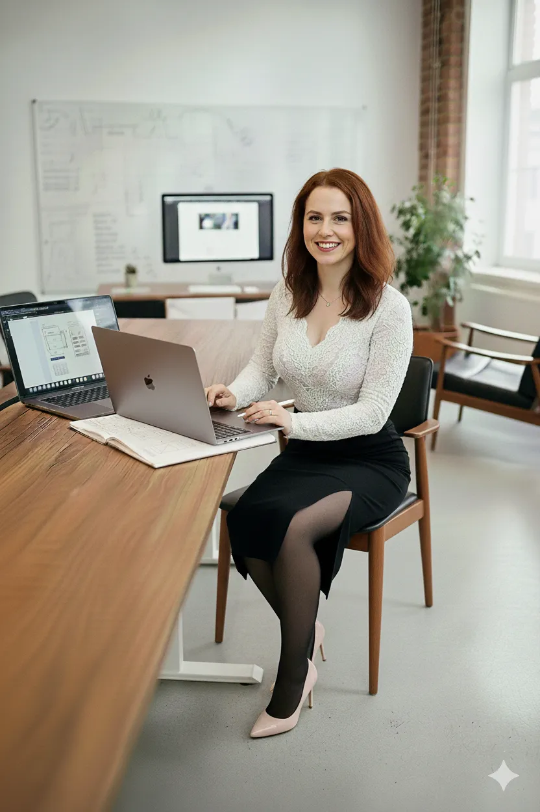

Nikola Palusková
Junior UX/UI Designer · Web & E-commerce
O mně
Dávat věcem tvar, který má smysl, čistotu a lidskou duši, mě neskutečně baví. Věřím, že dobrý design nestojí na složitých poučkách, ale na tom, když si uživatel na webu řekne:
Propojuji cit pro vizuální stránku s reálnou funkčností, nebojím se nových výzev v kódu a na projekty se dívám očima člověka, který je bude opravdu používat.
Dovednosti & Nástroje
Portfolio & Vlastní projekty
RDCJK
Regionální dobrovolnické centrum. Kompletní redesign přetíženého portálu. Cílem bylo vyčistit strukturu, usnadnit lidem cestu k dobrovolnictví a navrhnout plynulé chápání kalendáře akcí včetně napojení formulářů na automatizace.
Na kafe
Komunitní kavárna. Koncept digitálního zázemí pro útulnou kavárnu. Projekt řeší rezervační systém, výběr prostor, přehlednou nabídku dobrot a celkovou hřejivou atmosféru značky převedenou do digitálu.
Petr Penízek
Web finančního poradce. Osobní web finančního poradce postavený na důvěře, čistém minimalismu a lidském přístupu namísto suchých tabulek a bankovního slangu. Součástí je kompletní nová vizuální identita a logo.
Babygreens
Redesign loga a vizuální identity. Návrh svěžího a moderního vizuálního stylu pro lokální projekt zaměřený na pěstování mikrozeleniny.
Pracovní zkušenosti
Prodejce & Poradce · New Yorker, Dům porcelánu, Květiny Novák
- Přímý kontakt se zákazníky, naslouchání jejich přáním, obsluha pokladen a udržování chodu prodejny.
Operátor skladu & Zákaznická podpora · Dropshipping / GadgetHause
- Denní řešení krizových situací, komunikace se zákazníky a vyřizování reklamací s chladnou hlavou.
- Fakturace a vyřizování požadavků v interním systému.
E-commerce & Design · Shoptet – vlastní projekt
- Samostatné spuštění a vedení mini e-shopu se zaměřením na rostliny a doplňky (textil, hrníčky a další předměty).
- Vlastní autorská grafika a motivy kreslené v Procreate a jejich praktická realizace na různé druhy povrchů.
- Kompletní správa e-shopu: zakládání sortimentu, psaní popisků, výpočet marží a cenotvorba.
Současnost
Niky's kitchen web/blog + aplikace
Naplno buduji svou profesionální designérskou cestu. Aktivně tvořím vlastní webové projekty, prohlubuji znalosti v moderním UX/UI designu, pracuji s CMS systémy, verzuji na GitHubu, ladím komponenty v Bootstrap Studiu a rozvíjím automatizační procesy (Make, Tidycal).
Vzdělání
Maturita — Konzervátor a restaurátor kamene · SŠUP Vysočina
Umělecká škola, která mě naučila neuvěřitelné trpělivosti, citu pro detail, pokoře k řemeslu a estetickému vnímání prostoru.
Odborné kurzy
Skillmea kurzy
Webrebel 1: HTML, CSS & JavaScript, Microsoft Excel 365 (začátečník až mírně pokročilý), UX Storytelling pro designéry, UX design polopatě, Jak získat práci UX designéra.
Hero program
Intenzivní škola UX/UI designu a reálného uvažování nad digitálními produkty pod vedením Ondřeje Duška.
Czechitas workshop
Jednorázový praktický UX workshop zaměřený na základy testování uživatelské přívětivosti.
Jazyky
Zájmy
Kurz keramiky, pletení, vyšívání, zdravé vaření a pečení, psychologie, duševní hygiena, výstavy, galerie, čtení, péče o bylinky a vzácné pokojovky.
Běh, badminton, bouldering, turistika a meditace.